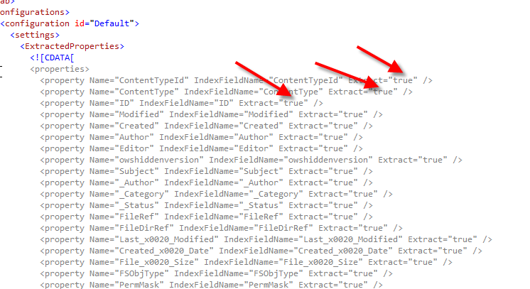
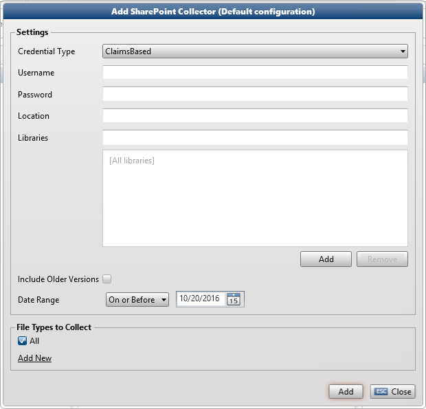
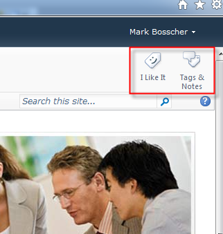

The SharePoint Collector collects objects from SharePoint Online and SharePoint On Premise (Intranet-based solutions through Client Object Models and SharePoint web services). ZyLAB offers support for SharePoint 2010, 2013, and SharePoint Online.
In the ZyLAB.EDiscovery.Collectors.SharePoint.dll.xml config file all property names that can be collected are specified. Here you can define the metadata (field properties) that should be collected. For each property you can set the Extract value to True (it will be collected) or False (it will not be collected). As the collector is designed to collect from different versions of Sharepoint (for which Sharepoint sometimes uses different property names), some properties are added more than once with a different name (for example, Author and _Author).
|
XML Configuration |
|
 |
We collect the following types of data (column types):
Client Configuration

This user should have Read Rights in SharePoint (Visitor Group).
The date range is not dynamically adjusted. For example, when you choose to collect everything until today (inclusive) and want to rerun the same collection action the next day, it will collect everything until yesterday (inclusive).
Social Tags & Notes

The SharePoint Collector also collects Social Tags and Social Notes from documents in SharePoint. They are collected via calls to SharePoint Web Services. By default this information is not displayed in Legal Review. If you want this information to appear in Legal Review, set the Extract value for the property names 'SocialTags' and 'SocialNotes' to True in the xml config file, and add the fields to the Legal Review template.
Configuration SharePoint Data Retrieval through Client Object Models
SharePoint Online is currently restricted to communication through SharePoint Foundation 2010 Client Object Models provided by Microsoft (current version used 15.0)
In the SharePoint Client Object Models, the ClientContext object serves as a gateway for accessing the SharePoint site. The object is used for everything from accessing data to performing tasks.
|
|
|